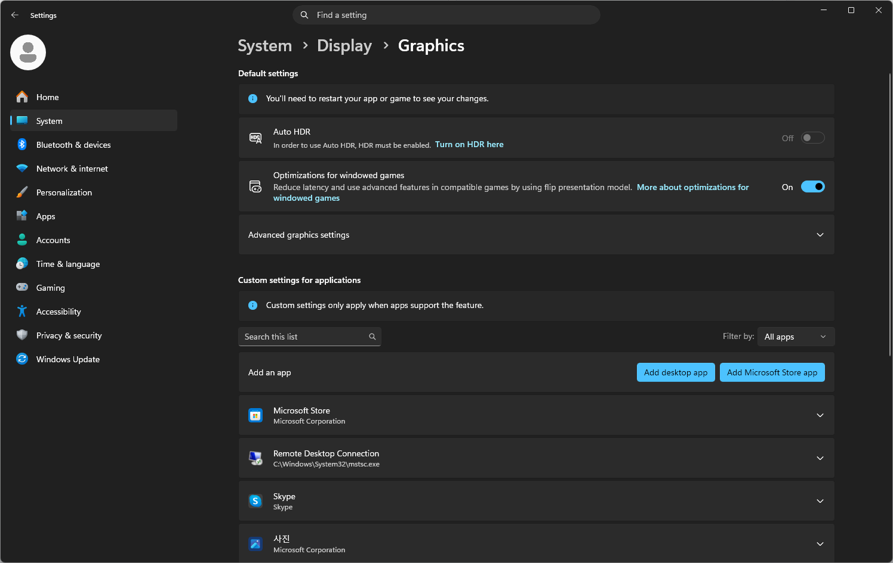
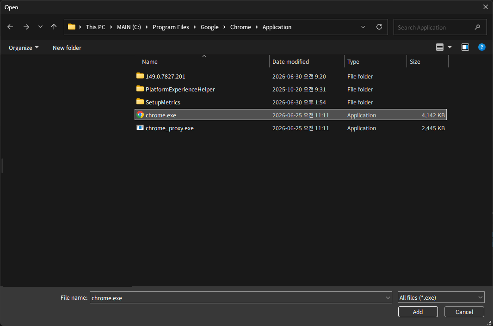
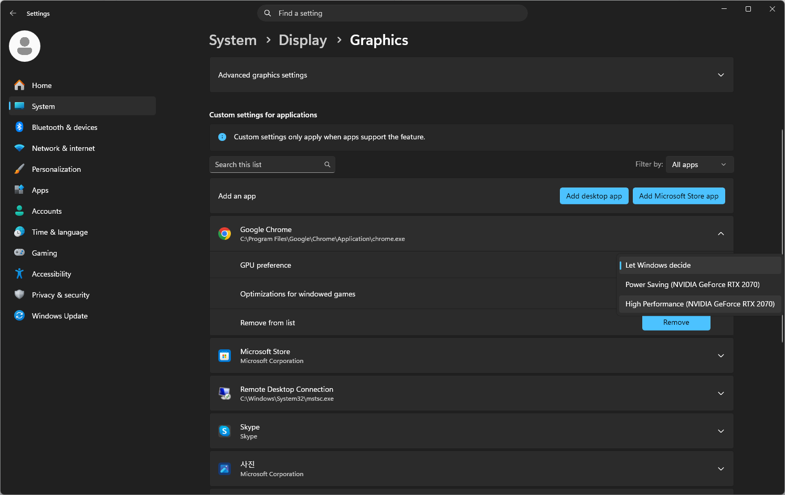
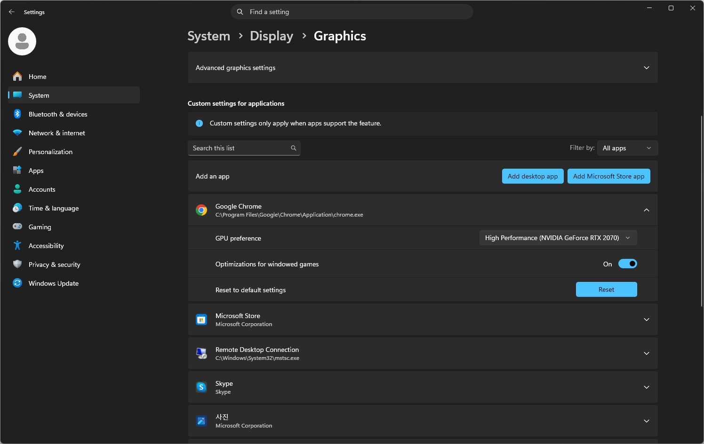

Chrome 그래픽 가속 켜기
chrome://settings/system접속- “가능한 경우 그래픽 가속 사용” 켜기
- 브라우저 재시작
WebGL/GPU 진단
WebGL을 사용할 때 현재 브라우저가 어떤 WebGL 버전과 GPU 렌더러를 사용하는지 확인합니다.
자동 검사
이 페이지는 브라우저에서 확인 가능한 WebGL/GPU 정보를 화면에 표시할 뿐 서버로 전송하지 않습니다. GitHub Pages 정적 페이지이므로 별도 서버 저장 기능은 없습니다. 단, 브라우저/GPU 정보는 사용자의 환경을 식별하는 단서가 될 수 있으므로 공유 시 주의해 주세요.
진단을 준비하고 있습니다.
간단 벤치마크
실제 서비스 성능을 그대로 대체하지는 않지만, 브라우저의 WebGL 렌더링 부하를 빠르게 비교할 수 있는 참고용 테스트입니다.
WebGL 벤치마크를 준비하고 있습니다.
값은 화면 크기, 배터리 모드, 브라우저 탭 상태, GPU 드라이버에 따라 달라집니다. 비교할 때는 충전기를 연결하고 같은 primitive 개수로 확인하세요.
설정 가이드
chrome://settings/system 접속chrome://gpu 접속Windows 화면 예시




빠른 복사
체크리스트
FAQ
Windows가 전원 절약을 위해 브라우저를 내장 그래픽으로 실행할 수 있습니다. 브라우저 그래픽 가속과 Windows 그래픽 설정을 함께 확인해 보세요.
무조건 문제는 아닙니다. 가벼운 WebGL 페이지는 Intel 내장 그래픽으로도 충분할 수 있습니다. 렌더링 부하가 큰 WebGL 페이지에서 느리다면 고성능 GPU 지정을 권장합니다.
가능성이 높지만 데이터 크기, 드라이버 상태, 브라우저 설정, 전원 모드, 네트워크 상태에 따라 성능이 달라질 수 있습니다.
고성능 GPU를 사용하면 전력 사용량이 늘 수 있습니다. 장시간 WebGL 페이지를 사용할 때는 충전기를 연결하는 것이 좋습니다.
보안 정책, 가상화, 원격 데스크톱 환경에서는 WebGL 또는 GPU 가속이 제한될 수 있습니다. 이 경우 IT 관리자 정책이나 원격 환경의 GPU 지원 여부를 확인해야 합니다.
브라우저 그래픽 가속을 켜고 NVIDIA 또는 AMD Radeon 드라이버를 업데이트한 뒤, Windows 그래픽 설정에서 Chrome을 고성능으로 지정해 보세요. 그래도 동일하면 보안 정책이나 원격 실행 환경을 확인해 주세요.
아닐 수 있습니다. WebGL을 사용하는 페이지라면 브라우저 그래픽 가속, GPU 선택, 드라이버 상태의 영향을 받을 수 있습니다.